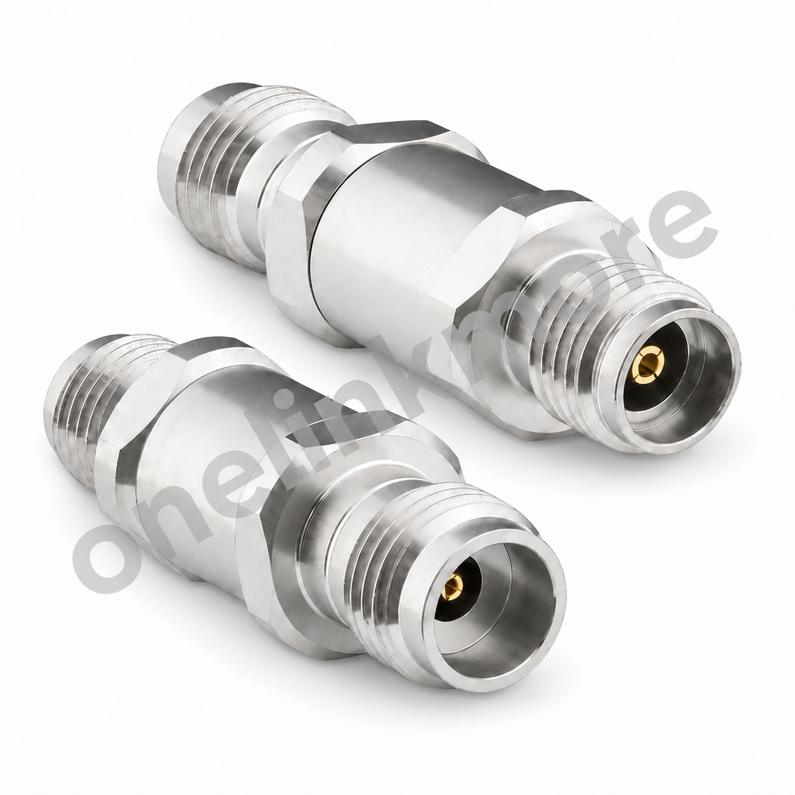
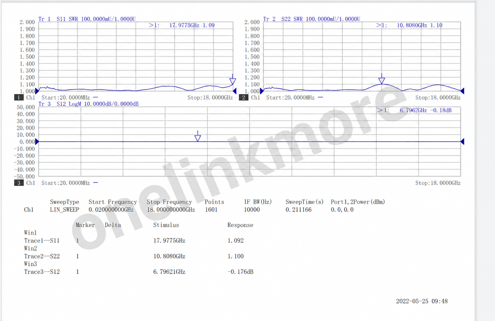

接口配置
3.5 mm 母头转 2.4 mm 母头
RF CONNECTOR / PRODUCT SPECIFICATION
3.5 mm 母头转 2.4 mm 母头射频转接器
OL-9717 是一款 3.5 mm 母头转 2.4 mm 母头射频转接器，图纸标称工作频率为 DC–33 GHz。页面所示测试曲线仅覆盖 20 MHz–18 GHz，不代表 DC–33 GHz 全频段验证。

CORE SPECIFICATIONS
接口配置
3.5 mm 母头转 2.4 mm 母头
工作频率
DC–33 GHz
阻抗
50 Ω
驻波比
最大 1.15
机械寿命
至少 500 次插拔
温度范围
-40 至 +125 °C
TECHNICAL SPECIFICATIONS
| 参数 Parameter | 规格 Specification |
|---|---|
| 接口与结构 | |
| 接口配置 | 3.5 mm 母头转 2.4 mm 母头 |
| 电气参数 | |
| 工作频率 | DC–33 GHz |
| 阻抗 | 50 Ω |
| 驻波比 | 最大 1.15 |
| 耐受电压 | 100 Vrms |
| 机械与环境参数 | |
| 机械寿命 | 至少 500 次插拔 |
| 温度范围 | -40 至 +125 °C |
| 参考外形长度 | 27.0 mm（REF，参考值） |
| 材料与结构 | |
| 主体材料及表面处理 | 303 不锈钢，钝化 |
| 绝缘体 | PEI |
| 中心导体 | 铍铜，镀金 |
TEST CURVES

CONTACT
电话： 13352990798
微信： YILIANDUO-RF